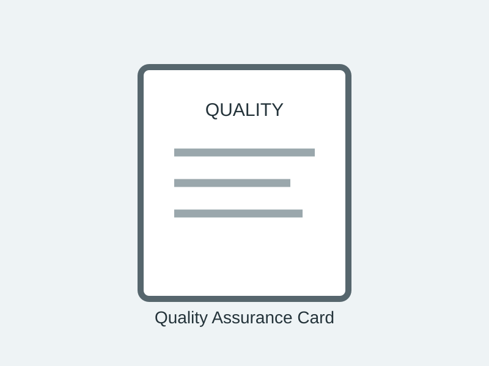

Surgical Tray Integrity Test
A practical tool for checking wrapped surgical trays before they move to the next stage of the workflow.
View productA simple, visible card for recording and communicating quality information about wrapped surgical instrument sets.

A simple, visible card for recording and communicating quality information about wrapped surgical instrument sets.
Please confirm specifications, dimensions, materials, regulatory classification and performance information against approved SURGICISS documentation before publication or procurement.
A practical tool for checking wrapped surgical trays before they move to the next stage of the workflow.
View productA practical rack for keeping instrument brushes organised, easy to access and ready for sterile processing work.
View productA purpose-built holder that keeps surgical count sheets organised and separate from instruments during processing.
View product